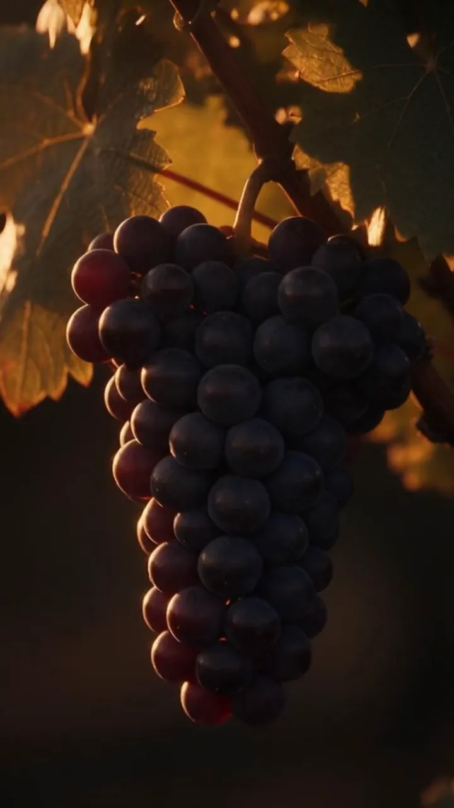

W.J · Wine Journey
Uncork a bottle,let joy awakenall your senses.
코르크를 여는 순간, 오감을 깨우는 즐거움과 마주해 보세요.
Our Journey
잔 속에서 피어나는 다채로운 향기, 입안을 감도는 깊은 풍미, 그리고 유리잔 끝에서 맴도는 맑은 여운까지.
W.J(Wine Journey)는 한 잔의 와인이 선사하는 완벽하고 진한 매력을 오감으로 탐구하고 공유하는 커뮤니티입니다.
당신의 일상을 깨울 새로운 와인의 여정,
지금 여기서 함께 시작해 볼까요?
Five Journeys
가격대마다,
고른 이유가 있습니다
세 기준 중 하나를 통과하고, 지금 한국에서 살 수 있는 와인만 골랐습니다. 마음이 가는 여정을 골라 보세요.
- 가성비 와인
- 10만 원 아래에서 평점과 맛이 확실하고, 그 나라다운 맛을 잘 보여 주는 병입니다.
- 스토리 와인
- 가격과 상관없이 한 잔을 나누며 들려줄 이야기가 있는 병입니다.
- 교과서 와인
- 그 품종과 산지가 원래 어떤 맛인지 보여 주는 대표 한 병입니다.
고른 조건에 맞는 와인이 없습니다.
Continue the Journey
여정을 이어 가는
세 가지 방법
Study
처음 마시는 분도,
오래 마신 분도
향 사전 · 품종 사전 · 나라별 등급 · 마시는 법 · 퀴즈를 쉬운 설명과 깊은 설명 두 겹으로 정리했습니다.